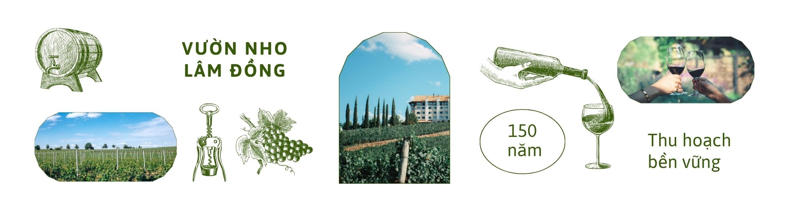

Theo Báo cáo Thị trường tuyển dụng 2026 của nền tảng Joboko, năm 2025, tỷ lệ thất nghiệp chung của Việt Nam ở mức 2,22%, song tỷ lệ thất nghiệp thanh niên lên tới 8,38%, đặc biệt tại khu vực thành thị là 11,24%. Con số này không chỉ phản ánh thực tế của thị trường lao động mà còn đặt ra thách thức lớn cho người trẻ trong việc thích nghi với những biến động kinh tế. Sang quý I/2026, tỷ lệ thất nghiệp của thanh niên (từ 15-24 tuổi) trên cả nước là 8,86%. Đáng chú ý, có gần 1,6 triệu thanh niên không có việc làm và không tham gia học tập, đào tạo.
Gen Z chật vật tìm việc
Đằng sau những con số là câu chuyện về áp lực bủa vây các cử nhân mới ra trường. T.H.M (23 tuổi), tốt nghiệp ngành Marketing tại một trường Đại học ở TP.HCM. Dù đã nộp hồ sơ cho hơn 20 công ty và tham gia nhiều vòng phỏng vấn, M. mới tìm được việc làm nhưng công việc hiện tại lại không như mong muốn. Cô bộc bạch: "Mình áp lực bởi bạn bè, gia đình và hàng xóm. Có những hàng xóm quan tâm quá mức. Gia đình kỳ vọng vì là người học cao nhất. Công việc hiện tại mình cho rằng nó không phù hợp. Hiện tại, mình muốn đổi ngành nghề khác". Việc quan sát thấy bạn bè đồng trang lứa sớm có công việc ổn định và mức lương cao càng làm gia tăng sự căng thẳng tâm lý cho M.
Như trường hợp của T.M.A (23 tuổi) tốt nghiệp ngành du lịch, A đã ra trường được 6 tháng nhưng vẫn chưa tìm được một công việc ổn định. Đối mặt với chi phí sinh hoạt tại thành phố càng khiến A áp lực. A tâm sự: “Hiện tại mình đang làm công việc bán thời gian để tự lo cho bản thân. Thu nhập không nhiều nên khó có thể phụ giúp ba mẹ gần 60 tuổi và học phí của em còn đang đi học”. Nỗi lo tài chính và mong muốn phụ giúp gia đình khiến cô rơi vào căng thẳng.

Tình trạng thất nghiệp ở người trẻ có bằng ĐH xuất phát từ nhiều khía cạnh sâu xa. Chuyên gia kinh tế Huỳnh Thị Mỹ Nương nhận định: "Đầu tiên là sự mất cân bằng cung - cầu lao động. Nhiều ngành học tại các trường ĐH chưa đáp ứng được nhu cầu thực tế của thị trường". Hệ quả là nhiều sinh viên ra trường khó tìm được vị trí phù hợp với chuyên môn.
Thách thức lớn tiếp theo đến từ chất lượng đào tạo và kỹ năng thực tế. Bà Nương chia sẻ: "Nhiều sinh viên dù sở hữu bằng ĐH nhưng thiếu các kỹ năng mềm như giao tiếp, làm việc nhóm, tư duy phản biện hay giải quyết vấn đề... Các công ty có chế độ tốt thường ưu tiên ứng viên có thể bắt tay vào việc ngay, với thời gian học việc ngắn".
"Nhiều bạn trẻ mong muốn mức lương cao và vị trí tốt ngay từ đầu, trong khi doanh nghiệp lại tìm kiếm ứng viên sẵn sàng học hỏi với mức lương phù hợp năng lực ban đầu." - Chuyên gia Huỳnh Thị Mỹ Nương.
Ông Nguyễn Đại Dương, chuyên gia nhân sự, bổ sung thêm: "Nguyên nhân cốt lõi có thể đến từ 2 yếu tố, đó là khoảng cách lớn giữa chương trình đào tạo ĐH và nhu cầu thực tế. Đồng thời, người trẻ thường tập trung vào kỹ năng chuyên môn hẹp mà quên mở rộng kiến thức đa chiều".
Tuyển dụng thời AI
Sự bùng nổ của trí tuệ nhân tạo (AI) đang tạo ra những chuyển dịch mạnh mẽ. Tổ chức Lao động Quốc tế (ILO) dự báo công nghệ này có thể tác động đến hơn 11 triệu việc làm tại Việt Nam. Tuy nhiên, giới chuyên gia cũng nhấn mạnh rằng bản chất của quá trình này là sự thay đổi tác vụ công việc thay vì thay thế con người một cách hoàn toàn.
Cô Iris Nguyễn, giảng viên tại Đại học Western Sydney và hệ Tài năng UEH, bày tỏ: "Với những công việc đòi hỏi tính sáng tạo, việc lệ thuộc hoàn toàn vào AI sẽ không được đánh giá cao. Ngược lại, những công việc có tính chất lặp đi lặp lại hoàn toàn có thể áp dụng AI để tối ưu hóa hiệu suất". Quy luật thực tế của thị trường lao động hiện nay là AI sẽ không thay thế công việc của con người, mà chính những người biết cách sử dụng AI sẽ thay thế công việc đó. Những ứng viên có năng lực điều phối và sử dụng AI một cách thông minh để giải phóng sức lao động sẽ nắm giữ lợi thế cạnh tranh lớn.
Thực tế tại các doanh nghiệp cho thấy AI đang dần thay thế những vị trí thực tập sinh thực hiện các tác vụ thủ công. Chị Bích Trâm, nhân sự cấp độ quản lí của BIZZI, đưa ra một minh chứng cụ thể: "Hiện tại, chỉ cần soạn câu lệnh, với hệ thống AI của công ty có thể tự động viết và gửi 150 email chỉ trong 2 tiếng đồng hồ. Trâm chỉ cần duyệt lại. Trước đây, một thực tập sinh có thể mất cả tuần để hỗ trợ hoàn thành khối lượng công việc này".
Các chuyên gia tuyển dụng cũng đồng tình rằng, khả năng ứng dụng AI một cách chủ động và thông minh để giải quyết công việc nhanh chóng là một điểm cộng lớn. Theo góc nhìn từ những người làm nhân sự, sinh viên mới ra trường thay vì thụ động chờ hướng dẫn, có thể tận dụng các công cụ AI để tìm kiếm ý tưởng, sàng lọc thông tin cơ bản trước khi trình bày với cấp trên. Nhìn chung, quy luật đào thải mới được định hình rất rõ ràng, AI sẽ không thay thế công việc mà những người biết sử dụng AI sẽ thay thế công việc đó.
Trang bị kỹ năng mềm
Để tăng giá trị cho bản thân trong thị trường lao động đầy cạnh tranh, người lao động trẻ cần chủ động thay đổi tư duy và hành động. Ông Nguyễn Đại Dương Giám đốc Công ty Cake Việt Nam nhấn mạnh: "Lao động trẻ phải luôn có tư duy cải tiến bản thân hằng ngày và tập trung vào việc tạo ra giá trị. Có như vậy thì mới có thể vượt qua thách thức và khẳng định vị trí trong thị trường lao động đầy cạnh tranh".
Bà Nương chỉ ra các hướng đi cốt lõi: "Người trẻ cần nâng cao năng lực chuyên môn. Đồng thời, các kỹ năng mềm như giao tiếp, tư duy phản biện, làm việc nhóm và khả năng thích nghi cần được rèn luyện song song. Ngoại ngữ, đặc biệt tiếng Anh, cũng là lợi thế lớn". Bà cũng khuyên người trẻ nên linh hoạt hơn trong quá trình khởi đầu sự nghiệp: "Người trẻ cần cởi mở với các vị trí khởi đầu thấp hoặc thậm chí chuyển ngành nếu phù hợp... Cuối cùng, xây dựng mạng lưới quan hệ là một chiến lược quan trọng".
Vai trò của mạng lưới quan hệ đặc biệt quan trọng trong việc tìm kiếm cơ hội. Trong một thị trường có mức độ cạnh tranh cao, nhà tuyển dụng thường ưu tiên những ứng viên có sự bảo chứng hoặc được giới thiệu từ các nguồn uy tín. Việc chủ động tạo dựng mối quan hệ từ sớm không chỉ giúp sinh viên học hỏi kinh nghiệm mà còn mở ra những cơ hội nghề nghiệp trực tiếp, giúp giảm thiểu tối đa tỷ lệ bị từ chối khi nộp hồ sơ đơn thuần.
Thị trường lao động luôn không dễ dàng với người lao động trẻ. Thay vì e ngại, những người trẻ biết phát huy sáng tạo, thấu cảm, nắm bắt công nghệ và biết xây dựng kỹ năng mềm sẽ vững bước trên chặng đường sự nghiệp sắp tới.